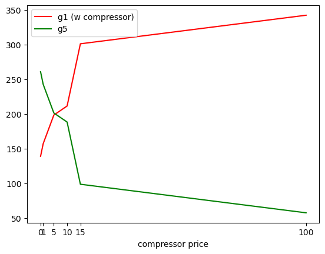

Problem 7.3#
Integrated Energy Grids
Problem 7.3
Assume the gas transport system that is shown in Figure 2. Gas can be injected in Node 1 at a marginal price of 10 EUR/kg or at Node 5 at 15 EUR/kg. There is a demand of 400 kg/s in Node 4. Assume pressure at node 4 is to 50 bar. Finally, Node 2-3 represents a pumping station where gas pressure can be increased by \(k_{23}\)=1.2 at a cost that is proportional to the mass flow \(m_{23}\) by a constant \(o_{23}\) =5 EUR/kg.
To calculate the speed of sound in gas \(c\), assume the universal gas constant \(R\)=8.314 J/molK, the molar mass of methane \(M\)=16 g/mol, compression factor \(Z\)=1.31, and temperature T=25\(^{\circ}\)C. Assume the diameter of the pipelines is \(D\) = 1000 mm, the length \(L_{12}\)=\(L_{34}\)=\(L_{45}\)=1000 m, and calculate the Darcy friction coefficient \(f_{D}\) assuming fully-turbulent flow and roughness \(\epsilon\)=0.001m.
(a) Write the equations of the optimization problem that minimizes the total system cost and use the Weymouth equation to represent pressure drop in the pipelines as a function of the mass flow \(m_{ij}\).
We define the pressure at differet node as \(\pi_i\) and the mass flow at different pipes as \(m_{ij}\) We have 9 variables (\(m_{12}\), \(m_{23}\), \(m_{34}\), \(m_{45}\), \(\pi_1\), \(\pi_2\), \(\pi_3\), \(\pi_4\), \(\pi_5\)).
We impose the energy balance constraint in nodes 1, 4 and 5, and the pipeline mass conservation and Weymouth equation in pipelines 12, 34 and 45.
where the coefficients \(a_{ij}=\frac{Lf^Dc^2}{DA^2}\) depend on the physical properties of the pipelines and the methane gas.
(b) Use gurobipy to formulate and solve the problem. Solve the problem for two extra cases of : \(o_{23}\) =1 EUR/kg and \(o_{23}\) =10 EUR/kg and compare the results.
We start by calculating the cofficients \(a_{ij}\) from the Weymouth equation
import numpy as np
The cross-sectional area \(A\), and the speed of sound in gas \(c\), can be calculated as
D = 1 # m
Z = 1.31
R = 8.314 # J/molk
M = 0.016 # Kg/mol
T = 273+25 # K
A = np.pi*(D/2)**2
c=np.sqrt(Z*R*T/M)
c
450.3900615022494
The Darcy friction coefficient can be calculated as \(\frac{1}{\sqrt f_D}=-2log_{10}(\frac{\epsilon}{3.7D})\)
epsilon = 0.001 #m
f_D=(1/(-2*np.log10(epsilon/(3.7*D))))**2
f_D
0.0196354659355267
The coefficients from the Weymouth equation can be calculated as \(a_{ij}=\frac{Lf_Dc^2}{DA^2}\)
L = 1000 #km
L_12=L
a_12=L_12*f_D*c**2/(D*A**2)
a_34=a_12
a_45=a_12
a_12
6457122.799219107
We import gurobipy and write the problem
import gurobipy as gp
from gurobipy import GRB
k_23 = 1.2
d_4 = 400 #kg/s
o_1 = 10 #EUR/kg
o_5 = 15 #EUR/kg
o_m23 = 5 #EUR/kg
p4= 50*1e5 ## Pa
model = gp.Model("My_quadratic_problem")
g_1 = model.addVar(vtype=GRB.CONTINUOUS, lb=0, name="g_1")
g_5 = model.addVar(vtype=GRB.CONTINUOUS, lb=0, name="g_5")
m_12 = model.addVar(vtype=GRB.CONTINUOUS, lb=0, ub=d_4, name="m_12")
m_23 = model.addVar(vtype=GRB.CONTINUOUS, lb=0, ub=d_4, name="m_23")
m_34 = model.addVar(vtype=GRB.CONTINUOUS, lb=0, ub=d_4, name="m_34")
m_45 = model.addVar(vtype=GRB.CONTINUOUS, lb=-d_4, ub=0, name="m_45")
abs_m_12 = model.addVar(vtype=GRB.CONTINUOUS, lb=0, name="abs_m_12")
abs_m_34 = model.addVar(vtype=GRB.CONTINUOUS, lb=0, name="abs_m_34")
abs_m_45 = model.addVar(vtype=GRB.CONTINUOUS, lb=0, name="abs_m_45")
p_1 = model.addVar(vtype=GRB.CONTINUOUS, lb=0, ub=50*1e5, name="p_1")
p_2 = model.addVar(vtype=GRB.CONTINUOUS, lb=0, ub=50*1e5, name="p_2")
p_3 = model.addVar(vtype=GRB.CONTINUOUS, lb=50*1e5, name="p_3")
p_4 = model.addVar(vtype=GRB.CONTINUOUS, lb=50*1e5, ub=50*1e5, name="p_4")
p_5 = model.addVar(vtype=GRB.CONTINUOUS, lb=50*1e5, name="p_5")
model.setObjective(o_1*g_1 + o_5*g_5 + o_m23*m_23, GRB.MINIMIZE)
constraint_a = model.addLConstr(g_1 == m_12)
constraint_b = model.addLConstr(-g_5 == m_45)
constraint_c = model.addLConstr(-d_4 == -m_34+m_45)
constraint_d = model.addLConstr(m_12 == m_23)
constraint_e = model.addLConstr(m_12 == m_34)
constraint_f = model.addLConstr(p_3 == k_23*p_2)
constraint_g = model.addLConstr(p_4 == p4)
# We need to define additional constraints to use absolute values
from gurobipy import abs_
model.addConstr(abs_m_12 == abs_(m_12), name='abs_m_12')
model.addConstr(abs_m_34 == abs_(m_34), name='abs_m_34')
model.addConstr(abs_m_45 == abs_(m_45), name='abs_m_45')
constraint_i = model.addQConstr(a_12*m_12*abs_m_12 == p_1**2-p_2**2)
constraint_j = model.addQConstr(a_34*m_34*abs_m_34 == p_3**2-p_4**2)
constraint_k = model.addQConstr(a_45*m_45*abs_m_45 == p_4**2-p_5**2)
model.optimize()
Gurobi Optimizer version 12.0.3 build v12.0.3rc0 (mac64[arm] - Darwin 24.6.0 24G419)
CPU model: Apple M4
Thread count: 10 physical cores, 10 logical processors, using up to 10 threads
Optimize a model with 7 rows, 14 columns and 13 nonzeros
Model fingerprint: 0xf835d7df
Model has 3 quadratic constraints
Model has 3 simple general constraints
3 ABS
Variable types: 14 continuous, 0 integer (0 binary)
Coefficient statistics:
Matrix range [1e+00, 1e+00]
QMatrix range [1e+00, 6e+06]
Objective range [1e+01, 2e+01]
Bounds range [4e+02, 5e+06]
RHS range [4e+02, 5e+06]
Presolve removed 6 rows and 9 columns
Presolve time: 0.00s
Presolved: 19 rows, 11 columns, 37 nonzeros
Presolved model has 5 bilinear constraint(s)
Solving non-convex MIQCP
Variable types: 11 continuous, 0 integer (0 binary)
Root relaxation: objective 5.000000e+03, 6 iterations, 0.00 seconds (0.00 work units)
Nodes | Current Node | Objective Bounds | Work
Expl Unexpl | Obj Depth IntInf | Incumbent BestBd Gap | It/Node Time
0 0 4999.99997 0 4 - 4999.99997 - - 0s
0 0 4999.99997 0 4 - 4999.99997 - - 0s
0 2 4999.99997 0 5 - 4999.99997 - - 0s
1459605 14182 5647.74393 58 5 - 5647.74393 - 0.4 5s
*1720858 1172 97 5304.6539813 5304.65398 0.00% 0.3 5s
Explored 1729605 nodes (603226 simplex iterations) in 6.01 seconds (2.04 work units)
Thread count was 10 (of 10 available processors)
Solution count 1: 5304.65
Optimal solution found (tolerance 1.00e-04)
Warning: max constraint violation (7.6408e-05) exceeds tolerance
Best objective 5.304653981271e+03, best bound 5.304653981271e+03, gap 0.0000%
print(str(g_1.VarName) + ' ' + str(g_1.x))
print(str(g_5.VarName) + ' ' + str(g_5.x))
print(str(m_12.VarName) + ' ' + str(m_12.x))
print(str(m_23.VarName) + ' ' + str(m_23.x))
print(str(m_34.VarName) + ' ' + str(m_34.x))
print(str(m_45.VarName) + ' ' + str(m_45.x))
print(str(p_1.VarName) + ' ' + str(round(p_1.x)) + ' Pa')
print(str(p_2.VarName) + ' ' + str(round(p_2.x)) + ' Pa')
print(str(p_3.VarName) + ' ' + str(round(p_3.x)) + ' Pa')
print(str(p_4.VarName) + ' ' + str(round(p_4.x)) + ' Pa')
print(str(p_5.VarName) + ' ' + str(round(p_5.x)) + ' Pa')
g_1 139.06920374575762
g_5 260.93079625424235
m_12 139.06920374575762
m_23 139.06920374575762
m_34 139.06920374575762
m_45 -260.93079625424235
p_1 4191982 Pa
p_2 4177061 Pa
p_3 5012473 Pa
p_4 5000000 Pa
p_5 5043772 Pa
flows_g1=[]
flows_g5=[]
for o_m23 in [0,1,5, 10, 15, 100] : #EUR/kg
#model.setParam("MIPFocus", 1)
#model.setParam("Threads", 1)
#model.setParam("Seed", 0)
model.setObjective(o_1*g_1 + o_5*g_5 + o_m23*m_23, GRB.MINIMIZE)
model.optimize()
flows_g1.append(g_1.x)
flows_g5.append(g_5.x)
Gurobi Optimizer version 12.0.3 build v12.0.3rc0 (mac64[arm] - Darwin 24.6.0 24G419)
CPU model: Apple M4
Thread count: 10 physical cores, 10 logical processors, using up to 10 threads
Optimize a model with 7 rows, 14 columns and 13 nonzeros
Model fingerprint: 0xf835d7df
Model has 3 quadratic constraints
Model has 3 simple general constraints
3 ABS
Variable types: 14 continuous, 0 integer (0 binary)
Coefficient statistics:
Matrix range [1e+00, 1e+00]
QMatrix range [1e+00, 6e+06]
Objective range [1e+01, 2e+01]
Bounds range [4e+02, 5e+06]
RHS range [4e+02, 5e+06]
MIP start from previous solve did not produce a new incumbent solution
Presolve removed 6 rows and 9 columns
Presolve time: 0.00s
Presolved: 19 rows, 11 columns, 37 nonzeros
Presolved model has 5 bilinear constraint(s)
Solving non-convex MIQCP
Variable types: 11 continuous, 0 integer (0 binary)
Root relaxation: objective 5.000000e+03, 6 iterations, 0.00 seconds (0.00 work units)
Nodes | Current Node | Objective Bounds | Work
Expl Unexpl | Obj Depth IntInf | Incumbent BestBd Gap | It/Node Time
0 0 4999.99997 0 4 - 4999.99997 - - 0s
0 0 4999.99997 0 4 - 4999.99997 - - 0s
0 2 4999.99997 0 5 - 4999.99997 - - 0s
1429605 14056 infeasible 85 - 5647.74393 - 0.4 5s
*1720858 1172 97 5304.6539813 5304.65398 0.00% 0.3 6s
Explored 1729605 nodes (603226 simplex iterations) in 6.13 seconds (2.04 work units)
Thread count was 10 (of 10 available processors)
Solution count 1: 5304.65
Optimal solution found (tolerance 1.00e-04)
Warning: max constraint violation (7.6408e-05) exceeds tolerance
Best objective 5.304653981271e+03, best bound 5.304653981271e+03, gap 0.0000%
Gurobi Optimizer version 12.0.3 build v12.0.3rc0 (mac64[arm] - Darwin 24.6.0 24G419)
CPU model: Apple M4
Thread count: 10 physical cores, 10 logical processors, using up to 10 threads
Optimize a model with 7 rows, 14 columns and 13 nonzeros
Model fingerprint: 0xfe942c67
Model has 3 quadratic constraints
Model has 3 simple general constraints
3 ABS
Variable types: 14 continuous, 0 integer (0 binary)
Coefficient statistics:
Matrix range [1e+00, 1e+00]
QMatrix range [1e+00, 6e+06]
Objective range [1e+00, 2e+01]
Bounds range [4e+02, 5e+06]
RHS range [4e+02, 5e+06]
MIP start from previous solve did not produce a new incumbent solution
Presolve removed 6 rows and 9 columns
Presolve time: 0.00s
Presolved: 19 rows, 11 columns, 37 nonzeros
Presolved model has 5 bilinear constraint(s)
Solving non-convex MIQCP
Variable types: 11 continuous, 0 integer (0 binary)
Root relaxation: objective 5.200000e+03, 6 iterations, 0.00 seconds (0.00 work units)
Nodes | Current Node | Objective Bounds | Work
Expl Unexpl | Obj Depth IntInf | Incumbent BestBd Gap | It/Node Time
0 0 5199.99997 0 4 - 5199.99997 - - 0s
0 0 5199.99997 0 4 - 5199.99997 - - 0s
0 2 5199.99997 0 5 - 5199.99997 - - 0s
*761867 929 95 5370.4130980 5370.41310 0.00% 0.4 2s
Explored 763835 nodes (274435 simplex iterations) in 2.67 seconds (0.90 work units)
Thread count was 10 (of 10 available processors)
Solution count 1: 5370.41
Optimal solution found (tolerance 1.00e-04)
Warning: max constraint violation (3.9062e-03) exceeds tolerance
Best objective 5.370413097954e+03, best bound 5.370413097954e+03, gap 0.0000%
Gurobi Optimizer version 12.0.3 build v12.0.3rc0 (mac64[arm] - Darwin 24.6.0 24G419)
CPU model: Apple M4
Thread count: 10 physical cores, 10 logical processors, using up to 10 threads
Optimize a model with 7 rows, 14 columns and 13 nonzeros
Model fingerprint: 0x6d33261a
Model has 3 quadratic constraints
Model has 3 simple general constraints
3 ABS
Variable types: 14 continuous, 0 integer (0 binary)
Coefficient statistics:
Matrix range [1e+00, 1e+00]
QMatrix range [1e+00, 6e+06]
Objective range [5e+00, 2e+01]
Bounds range [4e+02, 5e+06]
RHS range [4e+02, 5e+06]
MIP start from previous solve did not produce a new incumbent solution
Presolve removed 6 rows and 9 columns
Presolve time: 0.00s
Presolved: 19 rows, 11 columns, 37 nonzeros
Presolved model has 5 bilinear constraint(s)
Solving non-convex MIQCP
Variable types: 11 continuous, 0 integer (0 binary)
Root relaxation: objective 6.000000e+03, 6 iterations, 0.00 seconds (0.00 work units)
Nodes | Current Node | Objective Bounds | Work
Expl Unexpl | Obj Depth IntInf | Incumbent BestBd Gap | It/Node Time
0 0 6000.00000 0 4 - 6000.00000 - - 0s
0 0 6000.00000 0 4 - 6000.00000 - - 0s
0 2 6000.00000 0 4 - 6000.00000 - - 0s
1440838 41729 - 94 - 6000.00000 - 0.3 5s
2890290 73535 6000.00000 96 5 - 6000.00000 - 0.3 10s
*3442781 1268 88 6000.0000000 6000.00000 0.00% 0.3 12s
Explored 3450232 nodes (1129387 simplex iterations) in 12.20 seconds (3.66 work units)
Thread count was 10 (of 10 available processors)
Solution count 1: 6000
Optimal solution found (tolerance 1.00e-04)
Warning: max constraint violation (5.2133e-05) exceeds tolerance
Best objective 6.000000000000e+03, best bound 6.000000000000e+03, gap 0.0000%
Gurobi Optimizer version 12.0.3 build v12.0.3rc0 (mac64[arm] - Darwin 24.6.0 24G419)
CPU model: Apple M4
Thread count: 10 physical cores, 10 logical processors, using up to 10 threads
Optimize a model with 7 rows, 14 columns and 13 nonzeros
Model fingerprint: 0xa354a3d3
Model has 3 quadratic constraints
Model has 3 simple general constraints
3 ABS
Variable types: 14 continuous, 0 integer (0 binary)
Coefficient statistics:
Matrix range [1e+00, 1e+00]
QMatrix range [1e+00, 6e+06]
Objective range [1e+01, 2e+01]
Bounds range [4e+02, 5e+06]
RHS range [4e+02, 5e+06]
MIP start from previous solve did not produce a new incumbent solution
Presolve removed 6 rows and 9 columns
Presolve time: 0.00s
Presolved: 19 rows, 11 columns, 37 nonzeros
Presolved model has 5 bilinear constraint(s)
Solving non-convex MIQCP
Variable types: 11 continuous, 0 integer (0 binary)
Root relaxation: objective 7.000000e+03, 6 iterations, 0.00 seconds (0.00 work units)
Nodes | Current Node | Objective Bounds | Work
Expl Unexpl | Obj Depth IntInf | Incumbent BestBd Gap | It/Node Time
0 0 7000.00000 0 4 - 7000.00000 - - 0s
0 0 7242.68404 0 4 - 7242.68404 - - 0s
0 2 7337.34854 0 4 - 7337.34854 - - 0s
1426059 3859 infeasible 87 - 7337.34854 - 0.3 5s
2845639 3423 7337.34854 45 5 - 7337.34854 - 0.3 10s
4275415 3956 7337.34854 80 5 - 7337.34854 - 0.3 15s
*5173044 781 83 7057.7926030 7057.79260 0.00% 0.3 18s
Explored 5174809 nodes (1647123 simplex iterations) in 18.25 seconds (5.74 work units)
Thread count was 10 (of 10 available processors)
Solution count 1: 7057.79
Optimal solution found (tolerance 1.00e-04)
Warning: max constraint violation (1.1360e-03) exceeds tolerance
Best objective 7.057792603006e+03, best bound 7.057792603006e+03, gap 0.0000%
Gurobi Optimizer version 12.0.3 build v12.0.3rc0 (mac64[arm] - Darwin 24.6.0 24G419)
CPU model: Apple M4
Thread count: 10 physical cores, 10 logical processors, using up to 10 threads
Optimize a model with 7 rows, 14 columns and 13 nonzeros
Model fingerprint: 0x47afb47b
Model has 3 quadratic constraints
Model has 3 simple general constraints
3 ABS
Variable types: 14 continuous, 0 integer (0 binary)
Coefficient statistics:
Matrix range [1e+00, 1e+00]
QMatrix range [1e+00, 6e+06]
Objective range [1e+01, 2e+01]
Bounds range [4e+02, 5e+06]
RHS range [4e+02, 5e+06]
MIP start from previous solve did not produce a new incumbent solution
Presolve removed 6 rows and 9 columns
Presolve time: 0.00s
Presolved: 19 rows, 11 columns, 37 nonzeros
Presolved model has 5 bilinear constraint(s)
Solving non-convex MIQCP
Variable types: 11 continuous, 0 integer (0 binary)
Root relaxation: objective 8.000000e+03, 6 iterations, 0.00 seconds (0.00 work units)
Nodes | Current Node | Objective Bounds | Work
Expl Unexpl | Obj Depth IntInf | Incumbent BestBd Gap | It/Node Time
0 0 8000.00000 0 4 - 8000.00000 - - 0s
0 0 8984.39262 0 4 - 8984.39262 - - 0s
0 2 9187.51410 0 4 - 9187.51410 - - 0s
1440741 3076 infeasible 96 - 9187.51410 - 0.3 5s
2869750 2471 infeasible 85 - 9187.51410 - 0.3 10s
4319750 3805 infeasible 95 - 9187.51410 - 0.3 15s
5789563 3238 infeasible 94 - 9187.51410 - 0.3 20s
7158242 3411 - 100 - 9187.51410 - 0.3 25s
8607857 2196 infeasible 79 - 9187.51410 - 0.3 30s
10057857 1888 9187.51410 84 5 - 9187.51410 - 0.3 35s
11517013 2746 9187.51410 82 5 - 9187.51410 - 0.3 40s
*12350113 590 97 9012.0180672 9012.01807 0.00% 0.3 42s
Explored 12356828 nodes (4044527 simplex iterations) in 43.00 seconds (13.74 work units)
Thread count was 10 (of 10 available processors)
Solution count 1: 9012.02
Optimal solution found (tolerance 1.00e-04)
Warning: max constraint violation (5.7241e-05) exceeds tolerance
Best objective 9.012018067171e+03, best bound 9.012018067171e+03, gap 0.0000%
Gurobi Optimizer version 12.0.3 build v12.0.3rc0 (mac64[arm] - Darwin 24.6.0 24G419)
CPU model: Apple M4
Thread count: 10 physical cores, 10 logical processors, using up to 10 threads
Optimize a model with 7 rows, 14 columns and 13 nonzeros
Model fingerprint: 0x2f0022c3
Model has 3 quadratic constraints
Model has 3 simple general constraints
3 ABS
Variable types: 14 continuous, 0 integer (0 binary)
Coefficient statistics:
Matrix range [1e+00, 1e+00]
QMatrix range [1e+00, 6e+06]
Objective range [1e+01, 1e+02]
Bounds range [4e+02, 5e+06]
RHS range [4e+02, 5e+06]
MIP start from previous solve did not produce a new incumbent solution
Presolve removed 6 rows and 9 columns
Presolve time: 0.00s
Presolved: 19 rows, 11 columns, 37 nonzeros
Presolved model has 5 bilinear constraint(s)
Solving non-convex MIQCP
Variable types: 11 continuous, 0 integer (0 binary)
Root relaxation: objective 2.500000e+04, 6 iterations, 0.00 seconds (0.00 work units)
Nodes | Current Node | Objective Bounds | Work
Expl Unexpl | Obj Depth IntInf | Incumbent BestBd Gap | It/Node Time
0 0 25000.0000 0 4 - 25000.0000 - - 0s
0 0 34386.2701 0 4 - 34386.2701 - - 0s
0 2 38537.6535 0 4 - 38537.6535 - - 0s
*59963 559 86 38523.802698 38523.8027 0.00% 0.4 0s
Explored 65179 nodes (25665 simplex iterations) in 0.22 seconds (0.08 work units)
Thread count was 10 (of 10 available processors)
Solution count 1: 38523.8
Optimal solution found (tolerance 1.00e-04)
Warning: max constraint violation (6.8682e-05) exceeds tolerance
Best objective 3.852380269830e+04, best bound 3.852380269830e+04, gap 0.0000%
import matplotlib.pyplot as plt
plt.plot([0,1,5, 10, 15, 100],flows_g1, color='red', label='g1 (w compressor)')
plt.plot([0,1,5, 10, 15, 100],flows_g5, color='green', label='g5')
plt.xticks([0,1,5, 10, 15, 100])
plt.xlabel('compressor price')
plt.legend()
<matplotlib.legend.Legend at 0x11b33f710>
